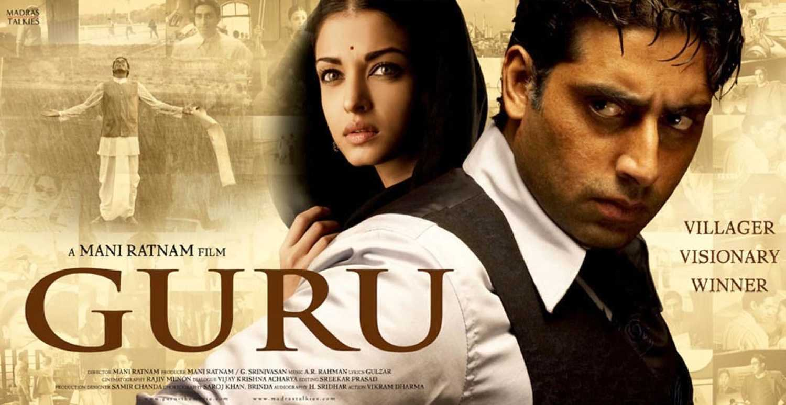

PLOT : A villager, Gurukant Desai, arrives in Bombay 1958, and rises from its streets to become the GURU, the biggest tycoon in Indian history.
DIRECTOR : Mani Ratnam
WRITER : Mani Ratnam (screenplay), Vijay Krishna Acharya (dialogue)
STARS : Mithun Chakraborty, Abhishek Bachchan, Aishwarya Rai Bachchan